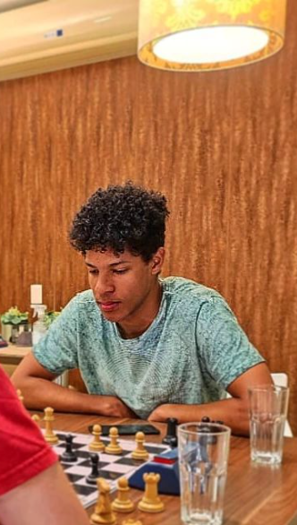

Do Tabuleiro para a Vida: O Xadrez com um Novo Olhar!
Como o Xadrez moldou a Mente de um Jovem com TDAH.
Nascido em Caxias do Sul, Josué Freitas vivenciou uma verdadeira transformação ao descobrir o xadrez. Diagnosticado com TDAH, encontrou nas 64 casas um universo de estratégias e desafios que o ajudaram a desenvolver habilidades que antes pareciam distantes.
A princípio, como muitos, Josué viu no xadrez apenas um passatempo. Mas ao se aprofundar no jogo, percebeu que a concentração, a estratégia e a capacidade de adaptação exigidas nas partidas eram os mesmos desafios que enfrentava no dia a dia por conta do TDAH.
Mas o xadrez vai além do individual. Para Josué, é uma filosofia de vida. Ele acredita que o jogo nos ensina que, assim como no tabuleiro, todos somos iguais, independentemente de nossas peças ou posições iniciais. O importante é a jornada, o aprendizado e o crescimento pessoal.
A jornada de Josué não foi fácil. A falta de foco, comum em pessoas com TDAH, era um obstáculo constante. No entanto, a cada partida vencida, a cada nova estratégia aprendida, sua confiança crescia. O xadrez se tornou um refúgio e as partidas se tornaram um treinamento constante para sua mente, aprimorando sua capacidade de concentração e foco.
"O TDAH me ajuda e ao mesmo tempo me atrapalha porque eu tenho hiperfoco entao eu fico vidrado no tabuleiro e me desconecto do mundo ao redor porem eu me distraio nos meu próprios pensamentos dentro do jogo entao mesmo eu pensando sobre o jogo sobre os lances eles ficam embaçados principalmente quando tem muita informação no tabuleiro"
"É crucial saber se adaptar a cada situação, seja no tabuleiro ou na vida. As vezes não gostamos de estilo de jogo mais posicional, mas se for preciso, temos de nos adaptar ( e isso não é sobre xadrez)."
O apoio da família nem sempre foi o esperado. A desaprovação da mãe, que associava o jogo ao azar, foi um desafio extra. Principalmente após ele ser reprovado no colégio por não fazer os trabalhos pois, passava 8 horas diárias estudando e jogando xadrez. Mas Josué persistiu, provando que o xadrez era muito mais que um passatempo, era uma paixão, um objetivo de vida.
Através do xadrez, ele aprendeu a lidar com suas frustrações, a organizar seu tempo, a desenvolver o pensamento crítico e a tomar decisões estratégicas. O jogo o ensinou que o sucesso é resultado de esforço, dedicação e persistência.
"Meu maior aprendizado no xadrez é que um bom sacrifício normalmente traz um vitória gloriosa, precisamos sacrificar a juventude, as festas, os vícios, para estudar e ter um futuro glorioso."